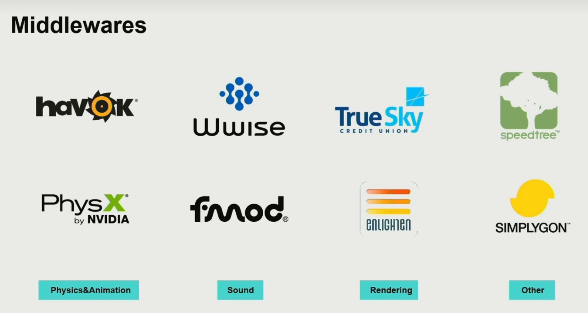
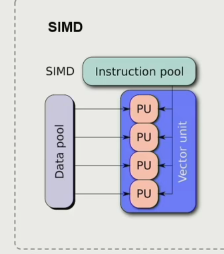

GAMES104Notes


引擎的基本架构
自顶向底的五层架构
- Tool Layer
工具链和编辑环境 - Function Layer
游戏逻辑设计 - Resource Layer
处理存储不同种类的文件资源 - Core Layer
构建功能 - Platform Layer
硬件的运行环境，输入设备的差别，软件的发布平台
resource layer
importing: resource -> asset
全局唯一编号: GUID
Runtime Asset Manager
Manager Asset Life Cycle
Function Layer
tick & frame
Multi-threading
Core Layer
Math Library
Math Efficiency
eg. Quick and dirty hacks
- Carmack’s 1/sqrt(x)
- Magic number
eg. SIMD
Data Structure and Containers
Memory Management
Foundation of Game Engine
Platform Layer
Target on Different Platform
Graphics API
eg. Render Hardware Interface(RHI)
Hardware Architecture
Tool Layer
Allow Anyone to Create Game
Digital Content Creation(DCC)
如何构建游戏世界
game object(GO)
property
behavior
OOP vs. Component
OOP 也符合直觉，但是在复杂的游戏世界中并没有非常清晰的父子继承关系。
现在更多地使用 Component 的方式，将游戏对象的行为分解为多个组件，每个组件只负责一种行为。
Component-based Tick
和曾经分GO Tick不同，现在是分Component Tick。由于 pipeline 效率更高
GO 间通信
- Hard Code
- Event
- uid
Scene Management
-
No division & Drived by grid
-
Spatial Data Structures
- Quadtree
- Octree
- Binary Space Partitioning(BSP)
- Bounding Volume Hierarchy(BVH)
- Scene Graph
Rendering
Basics of Game Rendering
GPU
SIMD(Single Instruction Multiple Data/单指令多数据)
SMID_ADD c, a, b
SIMT(Single Instruction Multiple Thread/单指令多线程)
SIMT_ADD c, a, b
GPU Architecture
- GPC(Graphics Processing Cluster)
- SM(Streaming Multiprocessor)
- Texture Units
- CUDA Core
- Warp

Data Flow From CPU to GPU
- CPU and Main Memory
- CPU to GPU
- GPU and Video Memory
尽可能让数据单向传输，从 CPU 到 GPU
尽可能不要从 GPU 里读数据
Be Aware of Cache Efficiency
数据一定要放在一起为 Cache(缓存) 做准备
GPU Bounds and Performance
Renderable
Mesh
1 | struct Vertex |
- Vertex Data
- Vertex declaration
- Vertex buffer
- Index Data
- Index declaration
- Index buffer
Triangle Strip 利好 Cache